Candidate List 20260410 Previous Day Next Day Section 1: New Sources (age<1d) Cosmological Afterglow
Section 2: Old (1-5d) sources observed last night placeholder
Section 1: New Afterglow/FBOT Cands Last Night (0)
Section 2: Older Sources Observed Last Night (27)
0. ZTF26aardniy (FBOT?) [Back to Top] [Share] [Trigger Swift] [Fritz ] [Lasair ]RA, Dec: 164.34836, 13.97245 10h57m23.61s, 13d58m20.81sGalactic (l, b): 233.51335, 60.34432 ext(g-r) = 0.021peak abs mag = -19.63 LegacySurvey: 1 sources in 3 arcsec Closest: d = 0.75 arcsec, 27.5 deg (east of north) photoz=0.66 (68% bounds 0.27, 1.46), type=EXP peak abs mag = -24.34 (68% bounds -22.05, -26.47) Consistent with synchrotron, g-r>0!
1. ZTF26aarjkei (FBOT?) [Back to Top] [Share] [Trigger Swift] [Fritz ] [Lasair ]RA, Dec: 148.36461, 16.03061 9h53m27.51s, 16d 1m50.19sGalactic (l, b): 218.59882, 47.39808 WARNING: 3.03 deg from ecliptic plane ext(g-r) = 0.039peak abs mag = -20.22 LegacySurvey: 1 sources in 3 arcsec Closest: d = 1.31 arcsec, 40.0 deg (east of north) photoz=0.52 (68% bounds 0.34, 1.03), type=REX peak abs mag = -23.03 (68% bounds -21.9, -24.83) Consistent with synchrotron, g-r>0!
2. ZTF26aarjkso (Afterglow?FBOT?) [Back to Top] [Share] [Trigger Swift] [Fritz ] [Lasair ]RA, Dec: 126.05861, 0.69325 8h24m14.07s, 0d41m35.71sGalactic (l, b): 223.34168, 20.85981 ext(g-r) = 0.04peak abs mag = -20.04 LegacySurvey: 1 sources in 3 arcsec Closest: d = 2.10 arcsec, 76.3 deg (east of north) photoz=0.16 (68% bounds 0.13, 0.18), type=SER peak abs mag = -20.45 (68% bounds -20.01, -20.75) Consistent with synchrotron, g-r>0!
3. ZTF26aarkxlf (Afterglow?FBOT?) [Back to Top] [Share] [Trigger Swift] [Fritz ] [Lasair ]RA, Dec: 139.65802, 14.78829 9h18m37.93s, 14d47m17.84sGalactic (l, b): 215.66214, 39.18571 WARNING: -0.85 deg from ecliptic plane ext(g-r) = 0.033peak abs mag = -19.54 LegacySurvey: 1 sources in 3 arcsec Closest: d = 1.76 arcsec, 318.5 deg (east of north) photoz=0.13 (68% bounds 0.13, 0.14), type=SER peak abs mag = -19.45 (68% bounds -19.31, -19.56) Consistent with synchrotron, g-r>0!
4. ZTF26aarlmyq (FBOT?) [Back to Top] [Share] [Trigger Swift] [Fritz ] [Lasair ]RA, Dec: 167.69895, -2.45017 11h10m47.75s, -2d-27m-0.61sGalactic (l, b): 259.60897, 51.74993 ext(g-r) = 0.049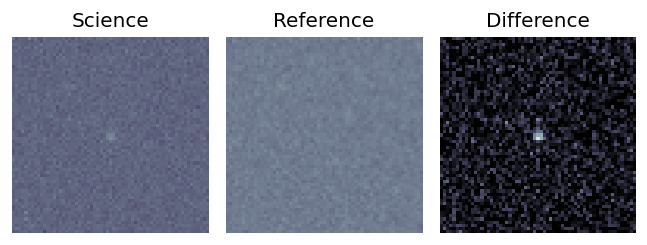
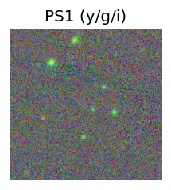
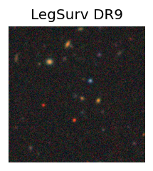
peak abs mag = -22.37 LegacySurvey: 1 sources in 3 arcsec Closest: d = 1.17 arcsec, 138.8 deg (east of north) photoz=0.59 (68% bounds 0.34, 0.86), type=REX peak abs mag = -23.17 (68% bounds -21.76, -24.16) 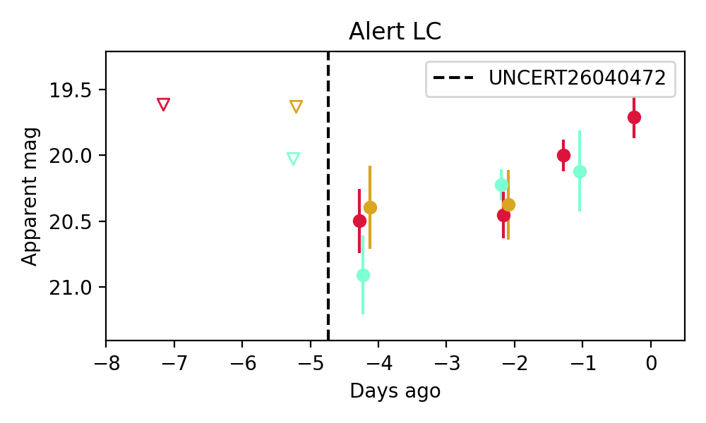
Consistent with synchrotron, g-r>0!
5. ZTF26aarlnvb (FBOT?) [Back to Top] [Share] [Trigger Swift] [Fritz ] [Lasair ]RA, Dec: 173.06384, 26.57332 11h32m15.32s, 26d34m23.97sGalactic (l, b): 210.20738, 72.3481 ext(g-r) = 0.021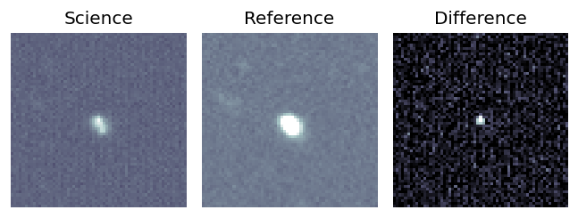
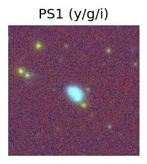
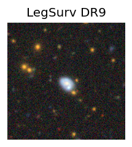
peak abs mag = -19.89 LegacySurvey: 1 sources in 3 arcsec Closest: d = 0.65 arcsec, 333.8 deg (east of north) photoz=0.03 (68% bounds 0.01, 0.08), type=EXP peak abs mag = -15.82 (68% bounds -13.78, -18.37) 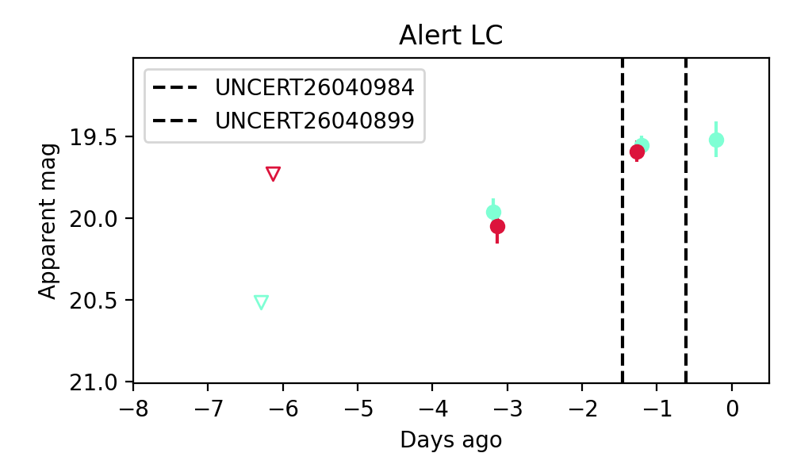
Consistent with synchrotron, g-r>0!
6. ZTF26aarovpx (FBOT?) [Back to Top] [Share] [Trigger Swift] [Fritz ] [Lasair ]RA, Dec: 239.23606, 27.15048 15h56m56.65s, 27d 9m1.74sGalactic (l, b): 44.01729, 48.97624 ext(g-r) = 0.043peak abs mag = -20.12 LegacySurvey: 1 sources in 3 arcsec Closest: d = 0.08 arcsec, 125.0 deg (east of north) photoz=0.24 (68% bounds 0.22, 0.27), type=SER peak abs mag = -21.61 (68% bounds -21.39, -21.88)
7. ZTF26aarvjmx (Afterglow?) [Back to Top] [Share] [Trigger Swift] [Fritz ] [Lasair ]RA, Dec: 223.89261, -20.24338 14h55m34.23s, -20d-14m-36.15sGalactic (l, b): 338.57544, 33.89855 WARNING: -3.37 deg from ecliptic plane ext(g-r) = 0.119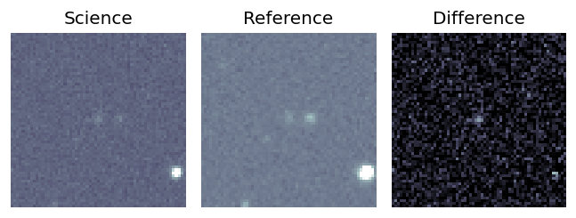
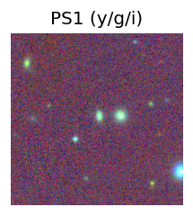
PS1: 1 source in 3 arcsec Closest: d = 0.98 arcsec photoz=0.17+/-0.05 peak abs mag = -20.11 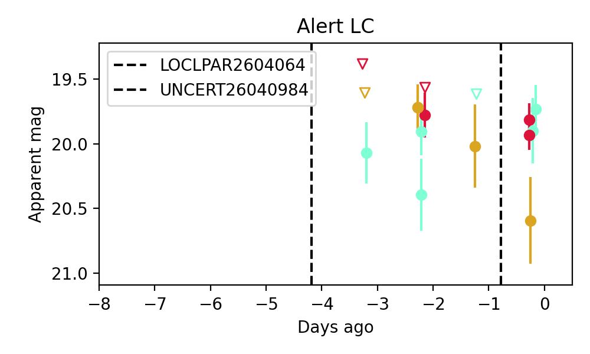
8. ZTF26aaryche (FBOT?) [Back to Top] [Share] [Trigger Swift] [Fritz ] [Lasair ]RA, Dec: 160.67461, 65.92596 10h42m41.91s, 65d55m33.44sGalactic (l, b): 141.2797, 46.35051 ext(g-r) = 0.013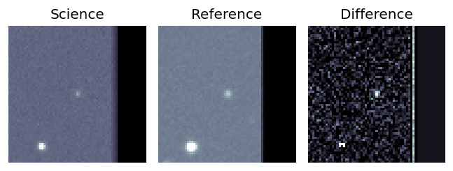
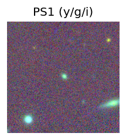
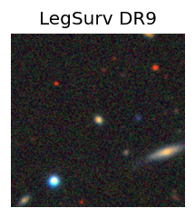
peak abs mag = -19.95 LegacySurvey: 1 sources in 3 arcsec Closest: d = 0.37 arcsec, 275.0 deg (east of north) photoz=0.13 (68% bounds 0.12, 0.15), type=REX peak abs mag = -19.06 (68% bounds -18.97, -19.34) 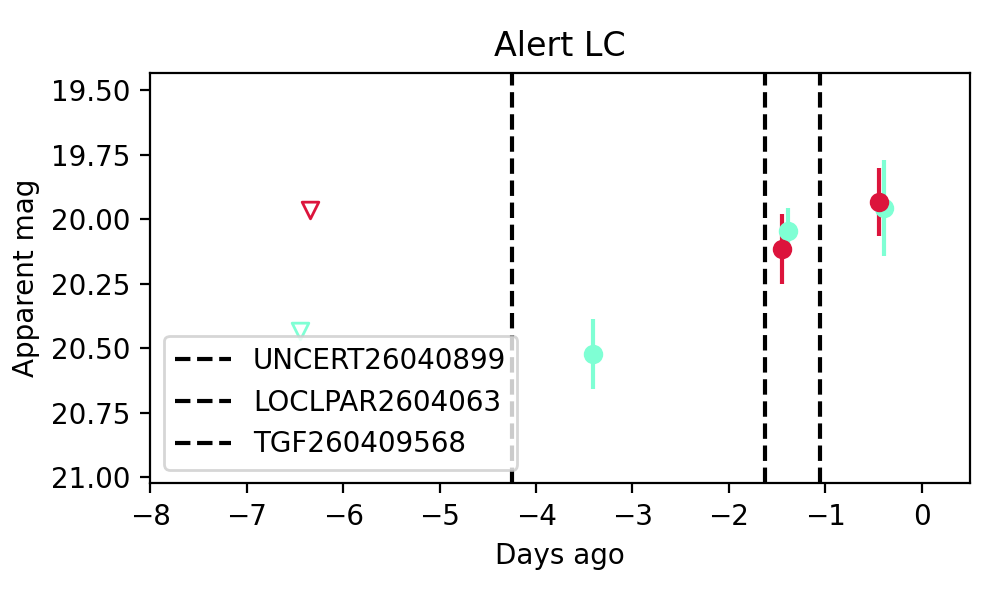
Consistent with synchrotron, g-r>0!
9. ZTF26aaryqsz (Afterglow?) [Back to Top] [Share] [Trigger Swift] [Fritz ] [Lasair ]RA, Dec: 148.7571, -18.73389 9h55m1.70s, -18d-44m-2.00sGalactic (l, b): 255.05184, 27.309 ext(g-r) = 0.044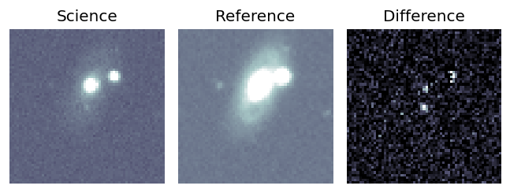
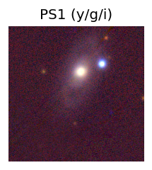
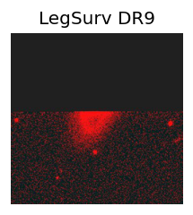
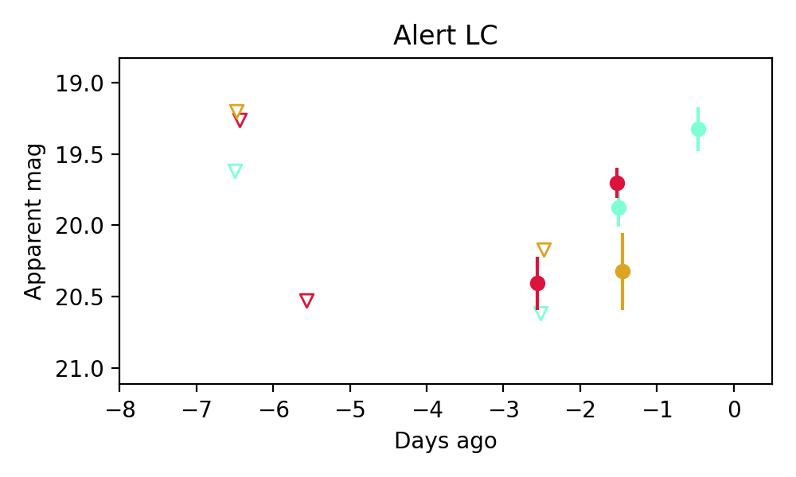
Consistent with synchrotron, g-r>0!
10. ZTF26aasadgb (Afterglow?) [Back to Top] [Share] [Trigger Swift] [Fritz ] [Lasair ]RA, Dec: 173.25662, 57.99796 11h33m1.59s, 57d59m52.66sGalactic (l, b): 141.57203, 56.20158 ext(g-r) = 0.015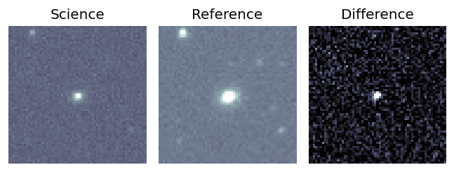
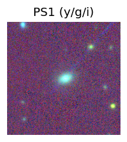
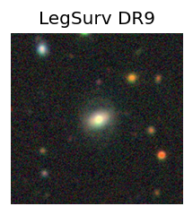
peak abs mag = -18.54 LegacySurvey: 1 sources in 3 arcsec Closest: d = 0.89 arcsec, 240.7 deg (east of north) photoz=0.08 (68% bounds 0.07, 0.09), type=SER peak abs mag = -18.63 (68% bounds -18.34, -18.97) 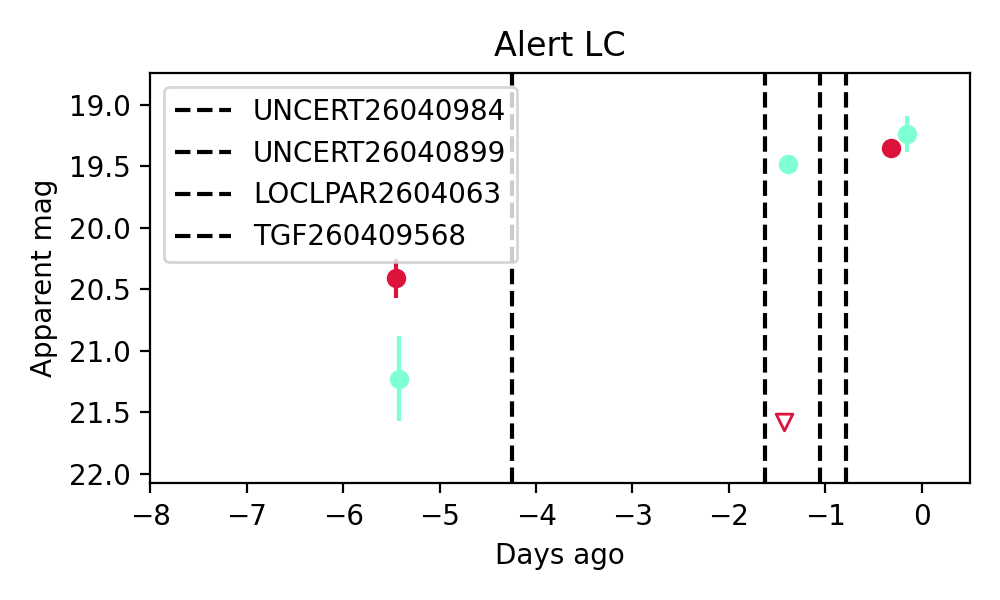
Consistent with synchrotron, g-r>0!
11. ZTF26aasafjr (FBOT?) [Back to Top] [Share] [Trigger Swift] [Fritz ] [Lasair ]RA, Dec: 171.54487, 42.25485 11h26m10.77s, 42d15m17.46sGalactic (l, b): 166.3786, 66.96898 ext(g-r) = 0.024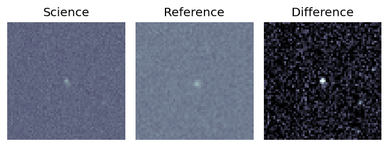
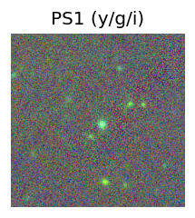
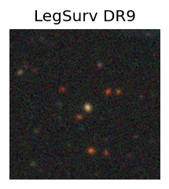
peak abs mag = -20.67 LegacySurvey: 1 sources in 3 arcsec Closest: d = 2.08 arcsec, 219.6 deg (east of north) photoz=0.22 (68% bounds 0.19, 0.26), type=REX peak abs mag = -20.14 (68% bounds -19.78, -20.52) 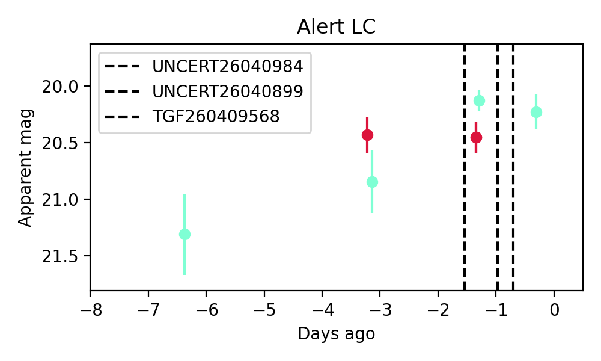
12. ZTF26aasbzem (FBOT?) [Back to Top] [Share] [Trigger Swift] [Fritz ] [Lasair ]RA, Dec: 196.46819, 54.92874 13h 5m52.37s, 54d55m43.46sGalactic (l, b): 118.50274, 62.0752 ext(g-r) = 0.02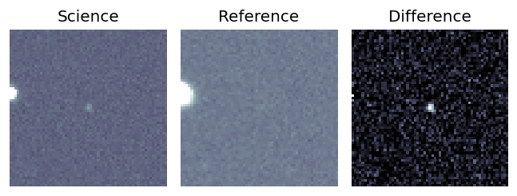
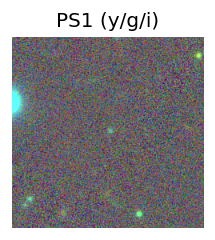
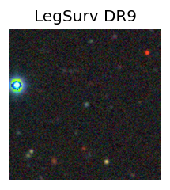
peak abs mag = -22.74 LegacySurvey: 1 sources in 3 arcsec Closest: d = 0.51 arcsec, 270.3 deg (east of north) photoz=0.32 (68% bounds 0.22, 0.5), type=REX peak abs mag = -21.55 (68% bounds -20.63, -22.72) 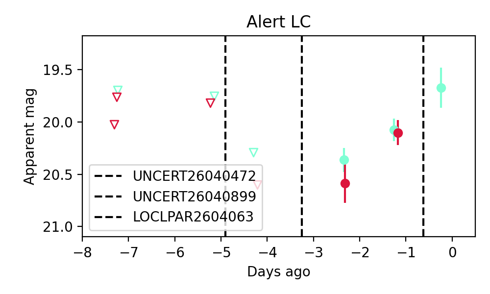
13. ZTF26aaschzj (Afterglow?) [Back to Top] [Share] [Trigger Swift] [Fritz ] [Lasair ]RA, Dec: 258.2539, -11.59389 17h13m0.94s, -11d-35m-38.02sGalactic (l, b): 10.65573, 15.74535 ext(g-r) = 0.733PS1: 1 source in 3 arcsec Closest: d = 7.12 arcsec photoz=0.61+/-0.20 peak abs mag = -26.80
14. ZTF26aascxum (Afterglow?FBOT?) [Back to Top] [Share] [Trigger Swift] [Fritz ] [Lasair ]RA, Dec: 122.57784, 34.67929 8h10m18.68s, 34d40m45.43sGalactic (l, b): 186.7944, 30.42309 ext(g-r) = 0.046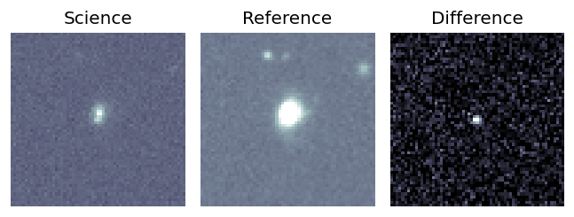
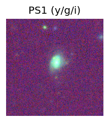
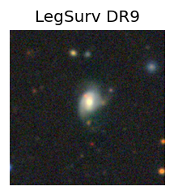
peak abs mag = -18.25 LegacySurvey: 1 sources in 3 arcsec Closest: d = 2.46 arcsec, 75.2 deg (east of north) photoz=0.15 (68% bounds 0.07, 0.38), type=EXP peak abs mag = -19.85 (68% bounds -18.14, -22.05) 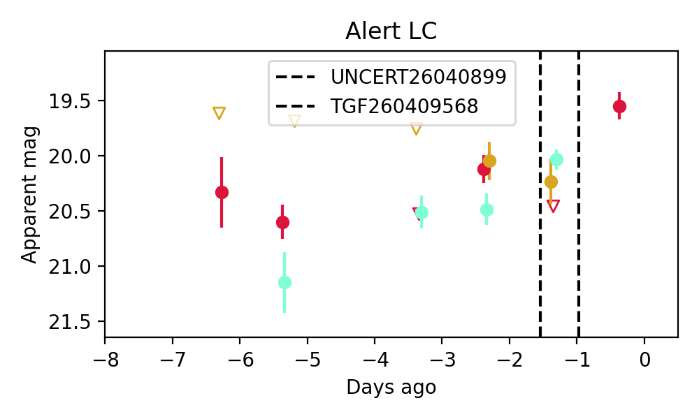
15. ZTF26aasdoia (Afterglow?) [Back to Top] [Share] [Trigger Swift] [Fritz ] [Lasair ]RA, Dec: 132.50748, -19.73972 8h50m1.79s, -19d-44m-23.00sGalactic (l, b): 245.01992, 15.09216 ext(g-r) = 0.208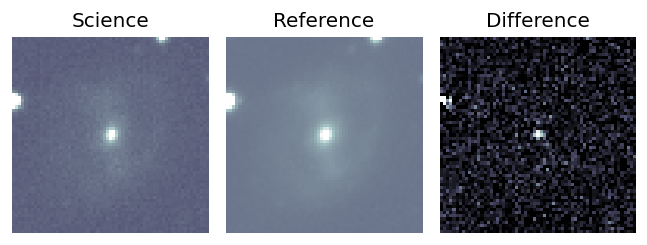
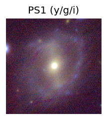
PS1: 1 source in 3 arcsec Closest: d = 0.22 arcsec photoz=0.01+/-0.00 peak abs mag = -14.44 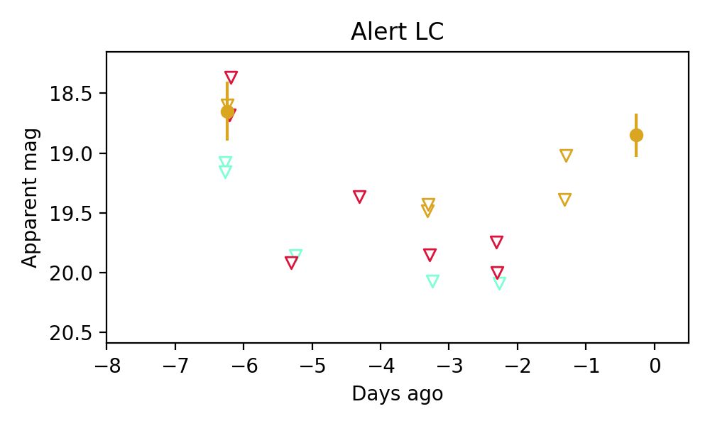
16. ZTF26aasdwti (FBOT?) [Back to Top] [Share] [Trigger Swift] [Fritz ] [Lasair ]RA, Dec: 142.75684, 22.34959 9h31m1.64s, 22d20m58.54sGalactic (l, b): 207.46419, 44.53624 ext(g-r) = 0.024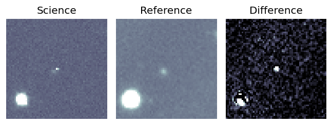
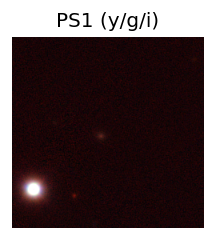
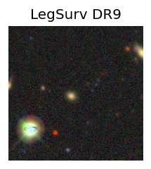
peak abs mag = -21.64 LegacySurvey: 1 sources in 3 arcsec Closest: d = 2.79 arcsec, 124.3 deg (east of north) photoz=0.2 (68% bounds 0.18, 0.22), type=SER peak abs mag = -21.01 (68% bounds -20.78, -21.27) 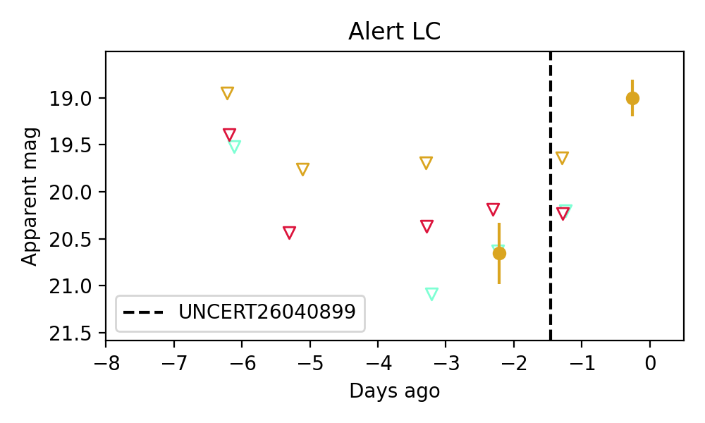
17. ZTF26aasdxrp (Afterglow?) [Back to Top] [Share] [Trigger Swift] [Fritz ] [Lasair ]RA, Dec: 153.43924, 25.87331 10h13m45.42s, 25d52m23.92sGalactic (l, b): 205.80552, 54.84436 ext(g-r) = 0.038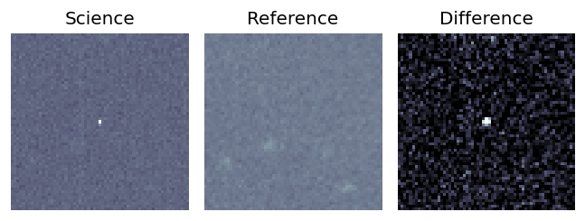
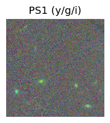
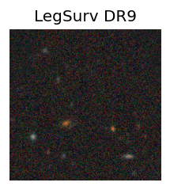
LegacySurvey: 1 sources in 3 arcsec Closest: d = 6.21 arcsec, 89.3 deg (east of north) photoz=0.51 (68% bounds 0.38, 0.75), type=REX peak abs mag = -22.81 (68% bounds -22.05, -23.82) 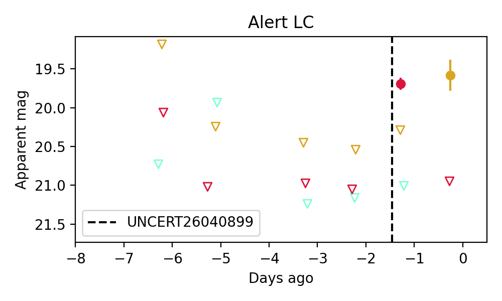
18. ZTF26aasektt (FBOT?) [Back to Top] [Share] [Trigger Swift] [Fritz ] [Lasair ]RA, Dec: 129.87464, 1.12858 8h39m29.91s, 1d 7m42.90sGalactic (l, b): 224.94567, 24.40342 ext(g-r) = 0.05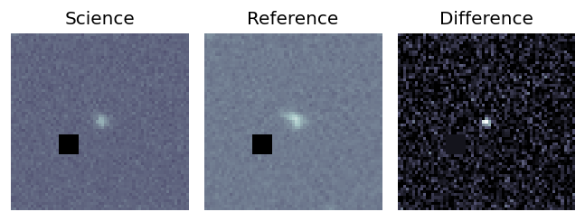
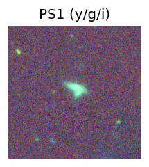
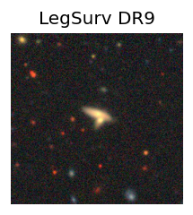
peak abs mag = -19.17 LegacySurvey: 1 sources in 3 arcsec Closest: d = 1.51 arcsec, 246.4 deg (east of north) photoz=0.19 (68% bounds 0.17, 0.22), type=SER peak abs mag = -19.86 (68% bounds -19.53, -20.18) 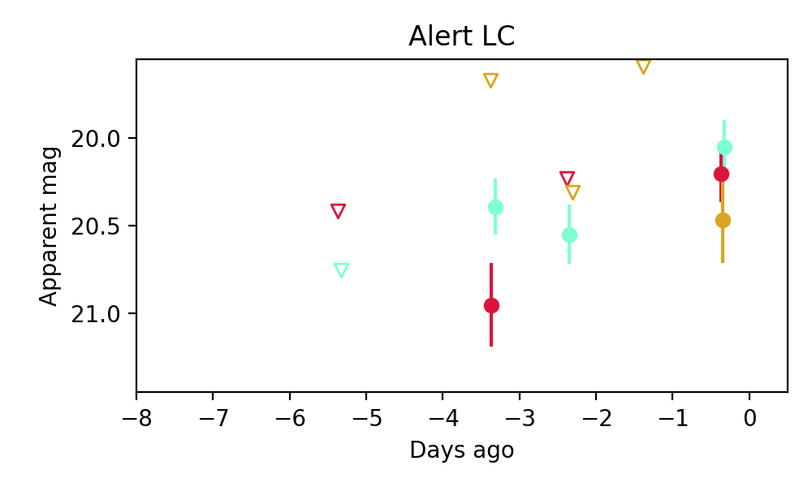
Consistent with synchrotron, g-r>0!
19. ZTF26aasemes (FBOT?) [Back to Top] [Share] [Trigger Swift] [Fritz ] [Lasair ]RA, Dec: 132.92274, 42.843 8h51m41.46s, 42d50m34.82sGalactic (l, b): 178.33631, 39.56606 ext(g-r) = 0.028peak abs mag = -19.35 LegacySurvey: 1 sources in 3 arcsec Closest: d = 0.39 arcsec, 262.3 deg (east of north) photoz=0.22 (68% bounds 0.15, 0.27), type=REX peak abs mag = -20.04 (68% bounds -19.17, -20.6) Consistent with synchrotron, g-r>0!
20. ZTF26aasewzi (FBOT?) [Back to Top] [Share] [Trigger Swift] [Fritz ] [Lasair ]RA, Dec: 145.36344, 1.19026 9h41m27.23s, 1d11m24.95sGalactic (l, b): 234.37723, 37.63686 ext(g-r) = 0.127LegacySurvey: 1 sources in 3 arcsec Closest: d = 0.25 arcsec, 203.0 deg (east of north) photoz=0.58 (68% bounds 0.32, 1.26), type=REX peak abs mag = -22.62 (68% bounds -21.06, -24.66)
21. ZTF26aasfcat (Afterglow?) [Back to Top] [Share] [Trigger Swift] [Fritz ] [Lasair ]RA, Dec: 172.39083, 21.36302 11h29m33.80s, 21d21m46.87sGalactic (l, b): 225.67363, 70.49495 ext(g-r) = 0.027LegacySurvey: 1 sources in 3 arcsec Closest: d = 4.51 arcsec, 138.5 deg (east of north) photoz=0.06 (68% bounds 0.05, 0.07), type=SER peak abs mag = -17.6 (68% bounds -17.19, -18.2) Consistent with synchrotron, g-r>0!
22. ZTF26aasfixl (FBOT?) [Back to Top] [Share] [Trigger Swift] [Fritz ] [Lasair ]RA, Dec: 187.76637, 8.93982 12h31m3.93s, 8d56m23.35sGalactic (l, b): 287.15385, 71.18483 ext(g-r) = 0.02peak abs mag = -20.38 LegacySurvey: 1 sources in 3 arcsec Closest: d = 0.23 arcsec, 294.1 deg (east of north) photoz=0.25 (68% bounds 0.2, 0.32), type=REX peak abs mag = -19.34 (68% bounds -18.81, -19.95)
23. ZTF26aasgfnd (Afterglow?) [Back to Top] [Share] [Trigger Swift] [Fritz ] [Lasair ]RA, Dec: 181.94734, 2.95415 12h 7m47.36s, 2d57m14.94sGalactic (l, b): 277.70559, 63.66744 WARNING: 3.48 deg from ecliptic plane ext(g-r) = 0.022LegacySurvey: 1 sources in 3 arcsec Closest: d = 9.97 arcsec, 307.6 deg (east of north) photoz=0.97 (68% bounds 0.58, 1.27), type=REX peak abs mag = -23.33 (68% bounds -21.98, -24.06)
24. ZTF26aasgfvw (FBOT?) [Back to Top] [Share] [Trigger Swift] [Fritz ] [Lasair ]RA, Dec: 182.11601, 7.81521 12h 8m27.84s, 7d48m54.76sGalactic (l, b): 273.15799, 68.16682 ext(g-r) = 0.015LegacySurvey: 1 sources in 3 arcsec Closest: d = 0.18 arcsec, 276.1 deg (east of north) photoz=0.81 (68% bounds 0.66, 0.92), type=DEV peak abs mag = -22.63 (68% bounds -22.11, -22.97)
25. ZTF26aasglrn (FBOT?) [Back to Top] [Share] [Trigger Swift] [Fritz ] [Lasair ]RA, Dec: 162.09747, 36.50659 10h48m23.39s, 36d30m23.72sGalactic (l, b): 185.37622, 62.37259 ext(g-r) = 0.014peak abs mag = -23.40 LegacySurvey: 1 sources in 3 arcsec Closest: d = 1.63 arcsec, 209.9 deg (east of north) photoz=0.22 (68% bounds 0.11, 0.65), type=REX peak abs mag = -20.04 (68% bounds -18.37, -22.82)
26. ZTF26aasjptt (FBOT?) [Back to Top] [Share] [Trigger Swift] [Fritz ] [Lasair ]RA, Dec: 239.48833, 41.79283 15h57m57.20s, 41d47m34.20sGalactic (l, b): 66.50141, 49.42472 ext(g-r) = 0.019peak abs mag = -19.66 LegacySurvey: 1 sources in 3 arcsec Closest: d = 8.23 arcsec, 266.8 deg (east of north) photoz=0.06 (68% bounds 0.03, 0.15), type=PSF peak abs mag = -18.38 (68% bounds -16.91, -20.66)